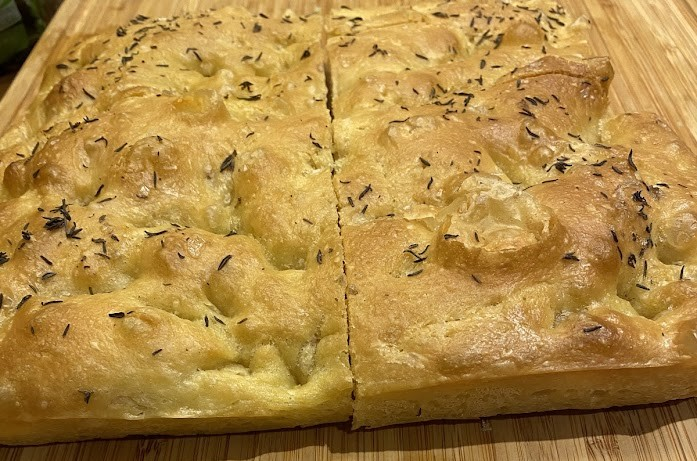
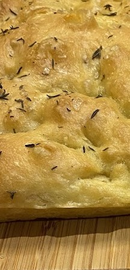

Focaccia sans pétrissage
⏱️ 24h + 20 min
🔥 Facile
👥 1 focaccia (26 cm)



Étapes
- Diluer la levure dans l’eau tiède.
- Ajouter farine + sel, mélanger vigoureusement.
- Repos 24h au frigo.
- Préparer l’huile infusée (ail + romarin).
- Faire 3 cycles de “stretch and fold” espacés de 30 min.
- Huiler le plat, déposer la pâte.
- Émulsionner huile + eau, verser délicatement.
- Faire les trous, ajouter fleur de sel.
- Cuire 20 min à 200°C.
- Badigeonner d’huile à la sortie.